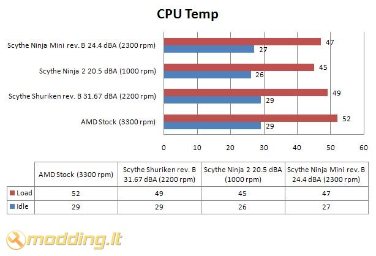

Scythe NINJA Mini rev. B
Jau esame apžvelgę kompanijos Scythe žemo profilio aušintuvą Scythe Shuriken rev. B. Jo aušinimo rezultatai buvo neblogi. Tesdamas mažagabaričių aušintuvų temą, šį kartą jums pristatau Scythe NINJA Mini rev. B - garsiojo NINJA 2 aušintuvo mažesniąją versiją. Šio aušintuvo dizainas kiek skiriasi nuo NINJA 2 dizaino, be to - naudojamas 80 mm ventiliatorius. Ar šie pakitimai labai įtakos aušinimo testų rezultatus tuoj pat išsiaiškinsime.
Žvilgsnis iš arčiau
Scythe NINJA Mini rev. B pakuotė išmarginta įvairiausiais užrašais. Vieni ryškiausių - Intel LGA 1366 Ready bei Quad Core Ready. Pakuotės šoninėje dalyje nurodyti palaikomi socket bei trumpai aprašomas 80 mm ventiliatorius. Kitoje šoninėje dalyje nurodyti montavimui skirti priedai skirtingiems socket bei aušintuvo specifikacijos 6 užsienio kalbomis. Galinėje pakuotės dalyje pateiktos aušintuvo naudojimo instrukcijos.
Pakuotės viduje randame:
- NINJA Mini rev. B aušintuvą
- tvirtinimo detales 754/939/940/AM2/AM2+/AM3 ir 478/LGA775/LGA1366 platformoms
- termopastą
- 4 vnt. rėmelių aušintuvų tvirtinimui: 2 vnt. 80 mm bei 2 vnt. 92 mm ventiliatoriams
- manual - vartotojo knygelę
Rinkinyje pridedami du papildomi rėmeliai ventiliatoriaus tvirtinimui, kurie jums pravers, jei nutarsite ant šio aušintuvo sumontuoti antrą ventiliatorių.
Specifikacijos
- Suderinamumas: socket 754/939/940/AM2/AM2+/AM3 ir 478/LGA775/LGA1366
- Išmatavimai: bendri 110(ilgis) x 110(plotis) x 115(aukštis) mm
- Išmatavimai: aušintuvo 80(ilgis) x 80(plotis) x 25(aukštis) mm
- Ventiliatoriaus apsisukimai: 2300 rpm (±10%)
- Ventiliatoriaus triukšmo lygis: 24.40 dBA
- Oro srautas: 32.20 CFM = 54 m³/h
- Svoris: 580g (su ventiliatoriumi)
- Radiatoriaus medžiagos: nikeliuotas varis, aliuminis
Scythe NINJA Mini rev. B aušintuvas komplektuojamas su 80 mm ventiliatoriumi, kurio maksimalus sukimosi greitis 2300 rpm sukeliant 24.40 dBA triukšmo lygį - šie parametrai geresni, nei mūsų apžvelgto Scythe Shuriken rev. B aušintuvo ventiliatoriaus. 80 mm ventiliatorius yra kiek mažesnis, sukasi vos 100 rpm didesniais apsisukimais, tačiau sukuria tokį patį 54 m³/h oro srautą esant mažesniam triukšmo lygiui nei sukelia Shuriken rev. B ventiliatorius.
NINJA Mini rev. B konstrukcija analogiška NINJA 2 aušintuvo konstrukcijai: aušintuvas pagamintas panaudojant 6 heatpipe šiluminius vamzdelius. Aušintuvas iš visų pusių atrodo beveik vienodai. Vamzdeliai išdėstyti nuo apačios iki pat viršaus, pereidami pro 18 aliuminio plokštelių. Apačioje vamzdeliai išeina iš aliumininio radiatoriaus, o aušintuvo viduryje yra tuštuma, kuri eina pro aliuminio plokšteles. Viršuje, ant Heatpipe vamzdelių, uždėti metaliniai apsauginiai gaubtai. Radiatoriaus kampuose yra išpjovos, einančios pro visas aliuminio plokšteles - tai esminis skirtumas nuo NINJA 2 aušintuvo. Pateikiu foto, kurioje matysite palyginamus NINJA 2 bei NINJA Mini rev. B aušintuvus.
Tvirtinimas
Aušintuvą Scythe NINJA Mini rev. B montavau AM2 socket'ui. Ventiliatorius prie radiatoriaus tvirtinamas geležinių rėmelių pagalba: rėmelis užkabinamas už aušintuvo, o vėliau už ant radiatoriaus esančio griovelio. Kadangi montavimo grioveliai yra iš visų pusių - ant šio aušintuvo gali būti sumontuoti keturi ventiliatoriai vienu metu.
Montuojant šį aušintuvą išiminėti motininės plokštės nereikia, kadangi nenaudojama papildoma sustiprinanti plokštelė. Nuo aušintuvo pagrindo nuimame apsauginę plėvelę. Prie aušintuvo pagrindo prisukame tvirtinimo rėmelį. Užtepame termopastą bei montuojame aušintuvą. Uždėję aušintuvą į montavimo poziciją, užkabiname auseles už AM2 tvirtinimo rėmelio bei užlenkiame tvirtinimo mechanizmą taip, kaip nurodyta instrukcijoje.
Pateikiu sumontuotos sistemos foto. Beliko šį aušintuvą išmėginti testuojant.

Rezultatai
Testavimo sistema:
- Mainboard - Asus M2N-E nForce570 Ultra
- CPU - AMD ATHLON 64 X2 Dual-Core 5000+ AM2 (65W)
- RAM - Corsair DDR2 KIT 2X1G 675MHZ TWIN2X2048-5400C4
- HDD - SEA BARRACUDA 7200.10 250GB SATAII 16MB ST3250410AS
- Video - inno3D GF8800GT 512MB GDDR3 RAMDAC 400MHZ Core 600MHz Memory 1800MHz
- PSU - Codegen 450W
Procesoriaus (CPU) temperatūra testuojama Idle ir Load rėžimais. Load rėžimui naudojama Orthos programa. Temperatūros rodmenys stebėti SpeedFan 4.39 programa. Testavimams naudotas korpusas galinėje sienelėje turi 120 mm orą ištraukiantį aušintuvą, besisukantį maksimaliais apsisukimais nuo 12V.
Testuose Scythe NINJA Mini rev. B aušintuvas palyginamas su AMD Stock, Scythe NINJA 2 bei Scythe Shuriken rev. B aušintuvais. AMD Stock aušintuvas sukasi maksimaliais 3300 rpm apsisukimais, Scythe Shuriken rev. B sukasi 2200 rpm (100x100x12 mm ventiliatorius, 31.91 CFM, 54 m³/h) greičiu, Scythe NINJA 2 sukasi 1000 rpm (120x120x25 mm ventiliatorius, 52.90 CFM) greičiu, o Scythe Ninja Mini rev. B surasi 2300 rpm (80x80x25 mm ventiliatorius, 32.2 CFM, 54 m³/h) greičiu.

Scythe NINJA Mini rev. B aušinimo rezultatai lenkia Scythe Shuriken rev. B aušinimo rezultatus: tiek Idle, tiek Load rėžimuose, temperatūrų skirtumas 2 ⁰C. Lyginant NINJA Mini su NINJA 2, NINJA Mini rezultatai prastesni, tačiau skirtumas neitin didelis: Idle rėžime 1 ⁰C, o Load - 2 ⁰C.
Išvados
Pliusai:
- geri aušinimo rezultatai
- kokybiškai surinktas
- komplekte papildomi rėmeliai 92 mm ventiliatoriaus tvirtinimui
Minusai:
- nėra apsukų reguliatoriaus
 Scythe NINJA Mini rev. B aušintuvas - nenuvylė. Geri aušinimo rezultatai, 24.40 dBA bei kompaktiškumas leidžia drasiai teigti, kad šis aušintuvas yra puikus pasirinkimas tiems, kam NINJA 2 netelpa į korpusą, arba tiems, kam NINJA 2 aušintuvas yra per brangus ir kelių ⁰C CPU temperatūros skirtumas nesvarbus.
Scythe NINJA Mini rev. B aušintuvas - nenuvylė. Geri aušinimo rezultatai, 24.40 dBA bei kompaktiškumas leidžia drasiai teigti, kad šis aušintuvas yra puikus pasirinkimas tiems, kam NINJA 2 netelpa į korpusą, arba tiems, kam NINJA 2 aušintuvas yra per brangus ir kelių ⁰C CPU temperatūros skirtumas nesvarbus.
Modding.lt komanda dėkoja
G. Povilaičiui iš UAB „Silent PC“ už suteiktą galimybę apžvelgti Scythe NINJA Mini rev. B aušintuvą.
Primename, kad UAB „Silent PC“ visus savo produktus Modding.lt lankytojams siūlo už specialią kainą (norėdami jas sužinoti, turite būti prisiregistravęs modding.lt aktyvus forumo vartotojas).
Jei norėsite pakomentuoti mano straipsnį arba pareikšti savo nuomonę, apsilankykite Modding.lt forume.


{kind=link}
{kind=link}
{kind=link}
{kind=link}
{kind=link}
{kind=link}
{kind=link}
{kind=link}
{kind=link}
{kind=link}
{kind=link}
{kind=link}
{kind=link}
{kind=link}
{kind=link}
{kind=link}